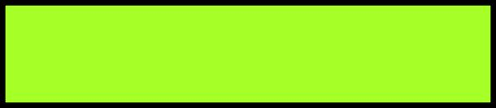
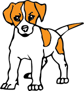

First of all you have to give your huskies food, like always, the food is dry food, but I would prefer you to buy dry food that has meat in it. You also should also give cold water for your huskies. It can be tap water, or pure water. This is the hard part, you have to walk your huskies every single day. If you don`t, your husky will be bored and start running around the house. But if you let him/her outside. They can have fun or run around in the park.
You should also buy them chew toys for their teeth to be clean, or milk bones which is a treat that cleans their teeth. You can also buy toothpaste and a toothbrush for dogs. Make sure the toothpaste is for dogs, or your dog will get a belly ache.

How To Care For Your Huskies
